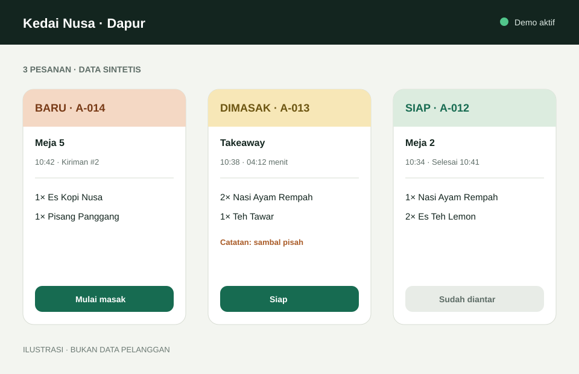
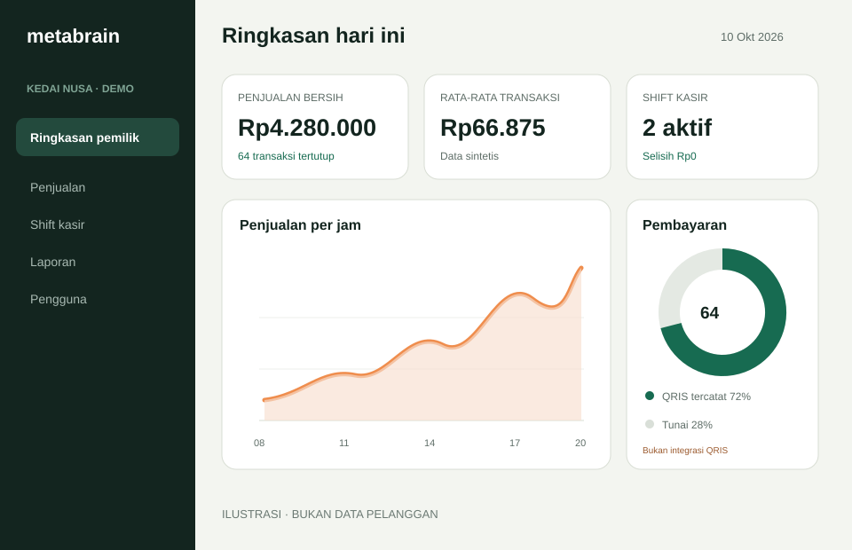

SaaS operasional multi-industri untuk UMKM
Satu jejak operasional, dari transaksi sampai keputusan pemilik.
ERP Cloud membantu usaha kecil menjaga transaksi, akses outlet, dan ringkasan pemilik tetap konsisten. Fokus Early Access saat ini adalah Cafe/Resto; Retail/POS tersedia sebagai demo terpandu. Industri lain masuk discovery, bukan janji fitur.
Belum dibuka untuk publik. Preview ini tidak mengirim, menyimpan, atau menganalisis data pengunjung.
Kedai Nusa · Data demo
Hari ini
Semua identitas dan angka bersifat sintetis.
Status fitur jujurAkses per tenant/outlet
Riwayat dapat ditelusuriEkspor terdokumentasi
Multi-industri, status tidak disamarkan
Mulai dari alur yang sudah teruji, bukan daftar janji panjang.
“Siap demo” berarti alurnya diterima dan dapat ditunjukkan dengan data sintetis. Itu bukan berarti layanan publik atau production GO.
Cafe / Resto
Order meja atau takeaway, kirim bertahap ke dapur, status KDS, diskon, pembayaran, struk, shift, dan ringkasan pemilik.
Target discovery utama: usaha independen 1–3 outlet.Retail / POS
Katalog dan barcode, checkout, pembayaran, stok SALE/RETURN, return/refund, struk, dan ringkasan pemilik.
Hanya untuk kebutuhan yang cocok dengan batas fitur saat ini.Distributor / Wholesale
Sales order, pengiriman, harga pelanggan, AR/kredit, carton UOM, purchasing, dan supplier belum diimplementasikan.
Minat boleh dicatat setelah consent; tidak boleh dijual sebagai fitur aktif.UMKM industri lainnya
Kecocokan dinilai dari alur transaksi, outlet, peran, dan pelaporan yang sudah ada—bukan dari label industrinya.
Jika butuh alur baru, hasilnya menjadi masukan roadmap terpisah.Storyboard demo Cafe/Resto
Lihat alur nyata tanpa data pelanggan.
“Kedai Nusa”, pengguna, menu, angka, dan transaksinya dibuat khusus untuk demonstrasi. Demo Retail menggunakan dataset sintetis terpisah.


Batas produk yang dapat diperiksa
Apa yang siap didemokan—dan apa yang belum dijanjikan.
Kapabilitas diterima · demo sintetis
- Cafe/Resto: menu, meja/order, dapur, pembayaran, struk, shift, laporan
- Retail/POS: barcode, checkout, pembayaran, stok, return/refund, laporan
- Tenant/outlet, membership dan peran yang eksplisit
- Subscription state, audit-oriented identity, ekspor dan restore drill
Roadmap / di luar Early Access
- Akuntansi, supplier, purchasing, AP, AR, atau kredit pelanggan
- HPP/AVCO, gross profit, konsumsi bahan, atau resep
- Distributor/Wholesale, carton UOM, WMS, atau fulfillment
- Marketplace delivery, QRIS otomatis, offline/native, atau AI
- Billing otomatis, SLA, sertifikasi keamanan, atau kustomisasi tanpa batas
Pilot tetap memerlukan provider pre-flight, pengujian isolasi deployment aktual, dan keputusan production GO terpisah. ERP Cloud tidak mengklaim RLS menyeluruh untuk seluruh tabel bisnis.
Hipotesis harga, bukan penawaran publik
Mulai kecil. Ukur manfaatnya.
Harga diuji hanya untuk percakapan discovery Cafe/Resto. Ketentuan pajak, dukungan, refund, annual term, dan biaya di luar paket belum disetujui. Tidak ada pembayaran yang diterima dalam Phase 3M-L.
CAFE · 1 OUTLET · MAKS. 5 USER
Rp149 ribu/bulan
atau Rp1,49 juta/tahun sebagai hipotesis
- Onboarding jarak jauh terpandu
- Alur Cafe/Resto yang tercantum
- Sesi feedback pilot mingguan
- Ekspor dan jalur keluar terdokumentasi
Pertanyaan umum
Transparan sebelum demo.
Apakah ERP Cloud sudah bisa dipakai publik?
Belum. Kapabilitas repository dapat didemokan, tetapi publikasi landing page, pengumpulan lead, provider pre-flight, dan production GO adalah persetujuan yang berbeda.
Mengapa menyebut multi-industri jika fokusnya Cafe/Resto?
Fondasi tenant, outlet, transaksi dan kontrol operasional dipakai lintas vertikal. Cafe/Resto adalah fokus Early Access, Retail/POS adalah demo sekunder, sedangkan Distributor dan industri lain tidak dipresentasikan sebagai fitur aktif.
Apakah data antar usaha dijamin oleh RLS penuh?
Tidak ada klaim itu. Desain memakai konteks tenant/outlet dari server, query scoping, guard relasi database, tes adversarial, dan role runtime terbatas. Hanya tabel proof khusus yang memakai FORCE RLS; deployment aktual tetap wajib diuji.
Bisakah membayar sekarang?
Tidak. Phase 3M-L menyiapkan launch gate dan eksperimen discovery. Tidak ada order, pembayaran, atau komitmen produksi yang diterima.
Rancangan formulir · nonaktif
Minat demo boleh dikumpulkan hanya setelah privacy gate.
Bidang di bawah memperlihatkan data minimum yang direncanakan. Semua kontrol dinonaktifkan, tidak ada endpoint, dan submit diblokir.
Tidak ada data yang dikumpulkan dalam preview ini.